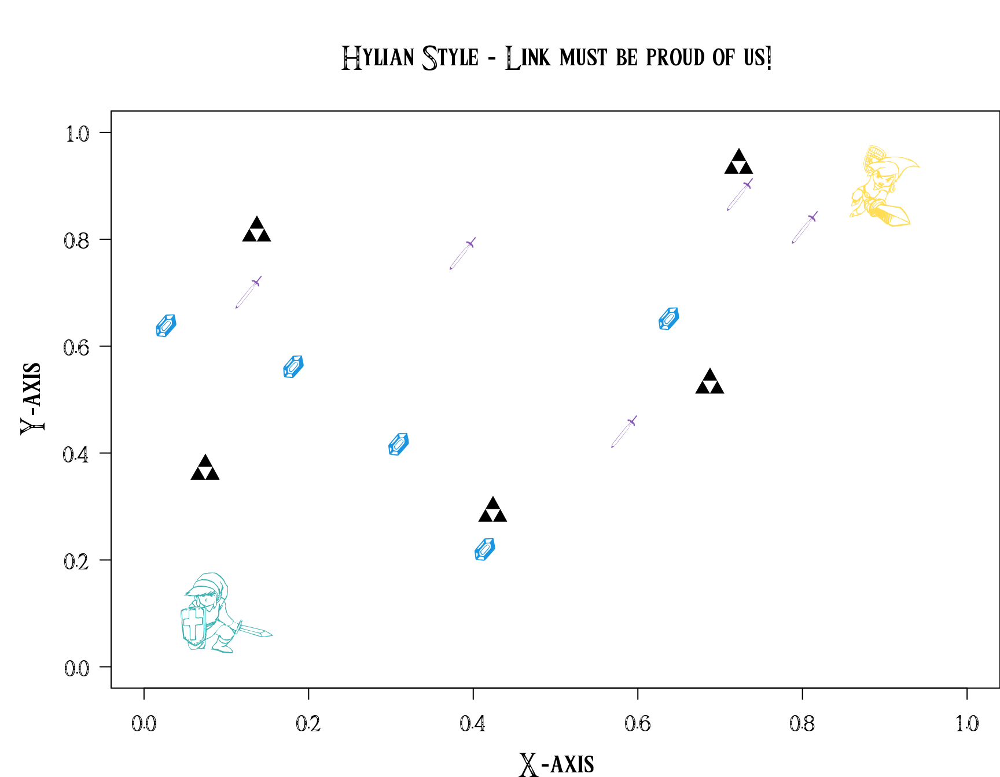

Kevin Cazelles David Beauchesne Nicolas Casajus
8min
Nov 11, 2017 -- Change paths to font files
sessionInfo()[[1L]]$version.string
#R> [1] "R version 3.4.4 (2017-01-27)"The Triforce font is available on line. Below we download it using R! Alternatively, you may simply download and install it using a couple of clicks, if you proceed so, skip step 1.
# Create a directory < fonts >
dr <- "downloaded_files/"
dir.create(dr, showWarnings = FALSE)
# Download Triforce font < Triforce.ttf >
url <- "http://zeldauniverse.net/wp-content/uploads/2014/01/Triforce.ttf_.zip"
download.file(url, destfile=paste0(dr, basename(url)),method="libcurl")
# Unzip the file
unzip(paste0(dr, basename(url)), exdir = dr)
# Remove .zip
file.remove(paste0(dr, basename(url)))
#R> [1] TRUEshowtext packageinstall.packages("showtext")library(showtext)
showtext_auto()
font_files()
#R> [1] "DejaVuSans-Bold.ttf"
#R> [2] "DejaVuSans.ttf"
#R> [3] "DejaVuSansMono-Bold.ttf"
#R> [4] "DejaVuSansMono.ttf"
#R> [5] "DejaVuSerif-Bold.ttf"
#R> [6] "DejaVuSerif.ttf"
#R> [7] "LiberationMono-Bold.ttf"
#R> [8] "LiberationMono-BoldItalic.ttf"
#R> [9] "LiberationMono-Italic.ttf"
#R> [10] "LiberationMono-Regular.ttf"
#R> [11] "LiberationSans-Bold.ttf"
#R> [12] "LiberationSans-BoldItalic.ttf"
#R> [13] "LiberationSans-Italic.ttf"
#R> [14] "LiberationSans-Regular.ttf"
#R> [15] "LiberationSansNarrow-Bold.ttf"
#R> [16] "LiberationSansNarrow-BoldItalic.ttf"
#R> [17] "LiberationSansNarrow-Italic.ttf"
#R> [18] "LiberationSansNarrow-Regular.ttf"
#R> [19] "LiberationSerif-Bold.ttf"
#R> [20] "LiberationSerif-BoldItalic.ttf"
#R> [21] "LiberationSerif-Italic.ttf"
#R> [22] "LiberationSerif-Regular.ttf"If you have installed the font on your computer, it should be in the list, then you can skip step 4.
If you have downloaded the font using R, you must notify showtext about to folder dr where the font has been stored. To so do, use the font_paths() function:
font_paths(dr)
#R> [1] "/home/travis/build/inSileco/inSileco.github.io/content/post/downloaded_files"
#R> [2] "/usr/local/share/fonts"
#R> [3] "/usr/share/fonts"
#R> [4] "/usr/share/fonts/truetype"
#R> [5] "/usr/share/fonts/truetype/dejavu"
#R> [6] "/usr/share/fonts/truetype/liberation"
#R> [7] "/usr/share/fonts/type1"
#R> [8] "/usr/share/fonts/type1/gsfonts"
#R> [9] "/usr/share/fonts/X11"
#R> [10] "/usr/share/fonts/X11/encodings"
#R> [11] "/usr/share/fonts/X11/encodings/large"
#R> [12] "/usr/share/fonts/X11/misc"
#R> [13] "/usr/share/fonts/X11/misc/dosemu"
#R> [14] "/usr/share/fonts/X11/Type1"
#R> [15] "/usr/share/fonts/X11/util"Either way, the Triforce font should now be available
# Is the TTF present?
font_files()[grep("Triforce", font_files())]
#R> [1] "Triforce.ttf"Let’s add it to our session:
font_add(family = 'Triforce', regular = 'Triforce.ttf')
font_families()
#R> [1] "sans" "serif" "mono" "wqy-microhei"
#R> [5] "Triforce"showtext_begin()
par(family = "Triforce", las = 1, cex.lab = 3, cex.main = 3, cex.axis=2, mar = c(4, 5, 5, 0))
plot(x = c(0, 1), y = c(0, 1), type = "n", xlab = "X-axis", ylab = "Y-axis")
title(main = "Hylian Style - Link must be proud of us!")
##-- triforce symbols / rubies / swords
points(x = runif(5), y = runif(5), pch = "*", cex = 4)
points(x = runif(5), y = runif(5), pch = "$", cex = 4, col = "#1b95e0")
points(x = runif(5), y = runif(5), pch = "@", cex = 4, col = "#8555b4")
##-- big Links
points(x = 0.1, y = 0.1, pch = "%", cex = 10, col = "#3fb3b2", lwd=2)
points(x = 0.9, y = 0.9, pch = "^", cex = 10, col = "#ffdd55", lwd=2)